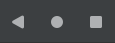
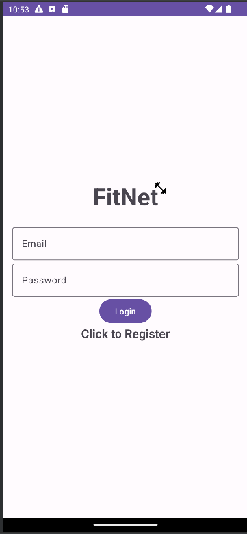
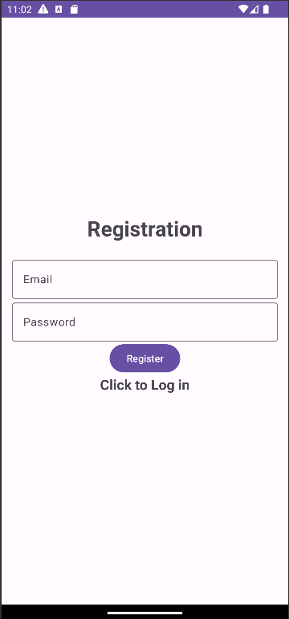
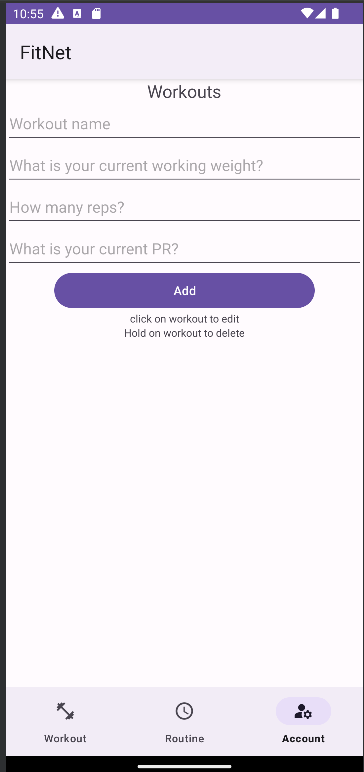
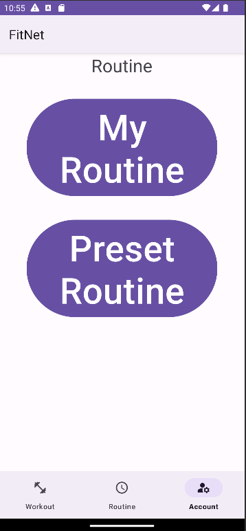
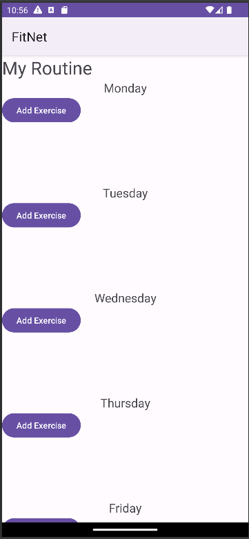
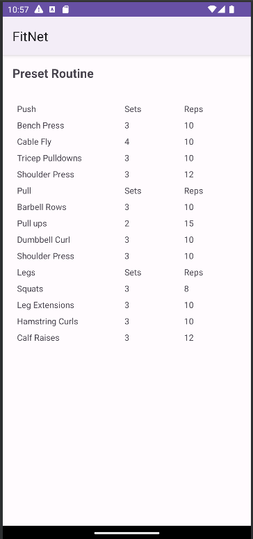
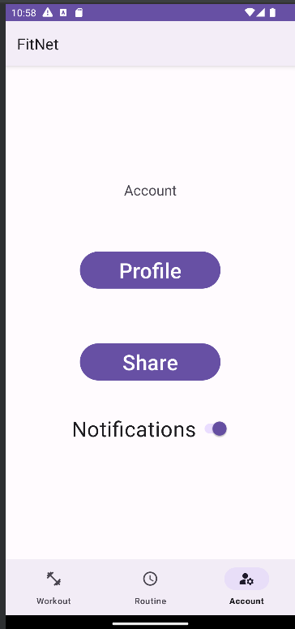
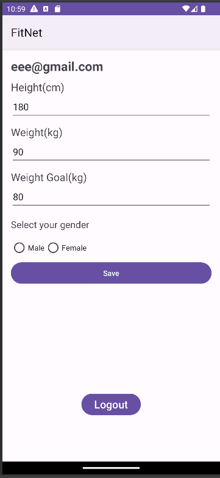

Welcome to the App User Guide
Make sure to use the android features such as the back button to help navigate through the app

Feature 1: Login System

The app provides a login system that allows users to securely access their accounts. To log in, follow these steps:
- Open the app on your device.
- On the login screen, enter your email and password in the provided fields.
- Tap the "Login" button to proceed.
- If the entered credentials are valid, you will be logged in and redirected to the main screen.
- If the authentication fails, an error message will be displayed, and you can try again.
Please make sure to enter the correct email and password associated with your account. If you haven't registered yet, you can tap on the "Register Now" link to create a new account.
FAQ
Q: I dont have an account. What should I do?
A: If you dont have an account, you can tap on the "click to register" link on the login screen. Follow the instructions to create your own account.
Q: Can I use a different email to log in?
A: No, you must use the email address that you used during the registration process to log in. If you have multiple accounts, make sure to use the correct email associated with the account you wish to access.
Feature 2: Registration

If you are a new user, you need to create an account before you can access the app. Follow the steps below to register:
- Open the app on your device.
- On the login screen, tap the "click to Register " link.
- Enter your email and password in the provided fields.
- Tap the "Register" button to create your account.
- If the registration is successful, you will be redirected to the login screen.
- You can then log in using your registered email and password.
Note: Make sure to provide a valid email address and a strong password for your account. Keep your login credentials secure and do not share them with anyone.
FAQ
Q: It wont let me enter a password or email. What should I do?
A: Your password must be a minimum of 6 characters and the email must end in @...mail.com
Feature 3: Workout

The "Workout" feature allows you to track your exercises and progress. Follow the steps below to use this feature:
- Open the app on your device.
- Navigate to the "Workout" section.
- Fill in the details for your exercise:
- Enter the exercise name in the "Item" field.
- Enter the weight used for the exercise in the "Weight" field.
- Enter the number of reps performed in the "Reps" field.
- Enter your best record for the exercise in the "Record" field.
- Tap the "Add" button to save the exercise.
- The exercise will be added to the list of exercises in the selected category.
- To edit an exercise:
- Tap on the exercise in the list.
- A dialog will appear with the exercise details.
- Edit the exercise details as needed.
- Tap the "Save" button to update the exercise.
- To delete an exercise:
- Long-press on the exercise in the list.
- A dialog will appear to confirm the deletion.
- Tap the "Delete" button to remove the exercise.
FAQ
Q: Can I view my exercise history or track my progress over time?
A: The "Workout" feature currently focuses on tracking individual exercises. It does not provide a built-in feature for viewing exercise history or tracking progress over time. However, you can manually record and analyze your exercise data externally, such as in a spreadsheet or fitness tracking app, to monitor your progress.
Feature 4: Routine

The "Routine" feature allows you to manage your workout routines. Follow the steps below to use this feature:
- Open the app on your device.
- Navigate to the "Routine" section.
- You have two options:
- Click on the "My Routine" button to access your personalized workout routine.
- Click on the "Preset Routine" button to view and follow a pre-defined workout routine.
- If you select "My Routine":
- You will be redirected to the "My Routine" page.
- Here, you can view and manage your personalized workout routine.
- Follow the instructions provided to perform the exercises in your routine.
- If you select "Preset Routine":
- You will be redirected to the "Preset Routine" page.
- Here, you can explore pre-defined workout routines.
- Select a routine that suits your goals and fitness level.
- Follow the instructions provided to perform the exercises in the selected routine.
FAQ
Q: Can I customize or create my own workout routine?
A: The "Routine" feature currently supports both personalized routines and pre-defined preset routines. You can create and manage your own workout routine by accessing the "My Routine" section.
Feature 5: My Routine

The "My Routine" feature allows you to create and manage your personalized workout routine. Follow the steps below to use this feature:
- Open the app on your device.
- Navigate to the "My Routine" section.
- You will see a list of days of the week (Monday, Tuesday, Wednesday, etc.).
- Tap on the desired day to view the exercises for that day.
- To add a new exercise:
- Tap the "Add Exercise" button for the corresponding day.
- A dialog will appear asking for exercise details.
- Enter the exercise name, sets, and reps in the provided fields.
- Tap the "Add" button to save the exercise to your routine.
- The exercise will be added to the list for the selected day.
- To delete an exercise:
- In the exercise list for a specific day, find the exercise you want to delete.
- Tap the delete button/icon next to the exercise.
- The exercise will be removed from your routine.
FAQ
Q: How many exercises can I add to my routine for each day?
A: There is no specific limit on the number of exercises you can add to your routine for each day. You can add as many exercises as you like to tailor your workout to your preferences and goals.
Q: Can I edit or modify an exercise in my routine?
A: The "My Routine" feature currently supports adding and deleting exercises from your routine.
Feature 6: Preset Routine

The "Preset Routine" feature provides a pre-defined workout routine that you can follow. Follow the steps below to use this feature:
- Open the app on your device.
- Navigate to the "Preset Routine" section.
- You will see a table layout with different sections for each muscle group (Push, Pull, Legs, etc.).
- The table layout displays the exercises, sets, and reps for each muscle group.
- To view the exercises for a specific muscle group:
- Find the corresponding section header (Push, Pull, or Legs).
- Under the section header, you will find a list of exercises with their respective sets and reps.
- Follow the exercise details to perform the workout for each muscle group.
- You can repeat the routine for multiple sessions or modify it based on your preferences and fitness level.
FAQ
Q: Can I modify the preset routine?
A: The "Preset Routine" feature provides a fixed workout routine that you can follow. However, if you want to modify the routine, you can take note of the exercises, sets, and reps mentioned in the table and create a personalized routine based on your preferences and fitness goals. You can add, remove, or modify exercises as needed.
Q: How often should I perform the preset routine?
A: The frequency of performing the preset routine depends on your fitness level, goals, and recovery capacity. It is generally recommended to have rest days between workouts to allow your muscles to recover. You can start by performing the routine two to three times a week and gradually increase the frequency or intensity as you progress. It's important to listen to your body and adjust the routine accordingly.
Feature 7: Account

The "Account" feature allows you to manage your profile and notifications. Follow the steps below to use this feature:
- Open the app on your device.
- Navigate to the "Account" section.
- You will see options to manage your profile and share your workout items.
- Profile:
- Tap on the "Profile" button to view and edit your profile details.
- You will be redirected to the profile page, where you can update your personal information, such as name, age, and goals.
- Make the desired changes and save them.
- Share Workout Items:
- Tap on the "Share" button to share your workout items.
- The app will retrieve your workout items from the Firebase Realtime Database.
- A share intent will be created with the workout items as text.
- Choose your desired method to share the workout items, such as through messaging apps, email, or social media.
- Notifications:
- There is a notifications switch that allows you to enable or disable workout reminders.
- By default, notifications are enabled.
- To enable or disable notifications:
- Toggle the switch to enable or disable notifications.
- When enabled, the app will schedule a daily notification to remind you to go to the gym.
- When disabled, the scheduled notification will be canceled.
FAQ
Q: How do I update my profile information?
A: To update your profile information, follow these steps:
- Navigate to the "Account" section.
- Tap on the "Profile" button.
- Update your personal information, such as name, age, and goals.
- Save the changes.
Q: How can I share my workout items?
A: To share your workout items, follow these steps:
- Navigate to the "Account" section.
- Tap on the "Share" button.
- A share intent will be created with your workout items as text.
- Choose your desired method to share the workout items, such as through messaging apps, email, or social media.
Q: Can I enable or disable workout reminders?
A: Yes, you can enable or disable workout reminders through the notifications switch in the "Account" section. By default, notifications are enabled. When enabled, the app will schedule a daily notification to remind you to go to the gym. When disabled, the scheduled notification will be canceled.
Feature 8: Profile

The "Profile" feature allows you to manage your personal information. Follow the steps below to use this feature:
- Open the app on your device.
- Ensure that you are logged in.
- Navigate to the "Profile" section.
- You will see fields to enter your height, weight, weight goal, and gender.
- Enter your personal information:
- Height: Enter your height in centimeters or inches.
- Weight: Enter your weight in kilograms or pounds.
- Weight Goal: Enter your weight goal in kilograms or pounds.
- Gender: Select your gender from the available options.
- Click on the "Save" button to save your profile information.
- A confirmation message will be displayed indicating that your profile has been saved successfully.
To log out of your account, follow these steps:
- Navigate to the "Profile" section.
- Click on the "Logout" button.
- You will be logged out of your account and redirected to the login page.
FAQ
Q: How do I update my profile information?
A: To update your profile information, follow these steps:
- Navigate to the "Profile" section.
- Enter your updated personal information in the corresponding fields, such as height, weight, weight goal, and gender.
- Click on the "Save" button to save your changes.
- A confirmation message will be displayed indicating that your profile has been updated successfully.
Q: Can I view my profile information?
A: Yes, to view your profile information, follow these steps:
- Navigate to the "Profile" section.
- Your current profile information, such as height, weight, weight goal, and gender, will be displayed in the corresponding fields.
Feature 9: MainActivity
The "MainActivity" feature serves as the main entry point of the app and provides navigation between different sections. Follow the steps below to use this feature:
- Launch the app on your device.
- You will be presented with the main screen of the app.
- The screen consists of a bottom navigation bar and a content area.
- Use the bottom navigation bar to switch between different sections:
- Workout: Tap on the "Workout" icon to navigate to the workout section.
- Routine: Tap on the "Routine" icon to navigate to the routine section.
- Account: Tap on the "Account" icon to navigate to the account section.
- The content area will display the selected section.
- You can swipe horizontally on the screen to switch between different sections as well.
- A daily notification will be scheduled to remind you to go to the gym at 12 PM (noon).
FAQ
Q: How can I navigate between different sections?
A: To navigate between different sections, you can use either of the following methods:
- Bottom Navigation Bar: Tap on the corresponding icon (Workout, Routine, or Account) in the bottom navigation bar.
- Swipe Gesture: Swipe horizontally on the screen to the left or right to switch between different sections.
Q: How do I receive the daily notification to remind me to go to the gym?
A: The app automatically schedules a daily notification at 12 PM (noon) to remind you to go to the gym. The notification will be sent to your device at the specified time.